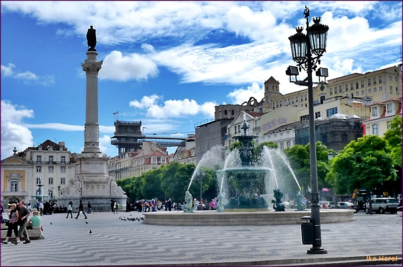
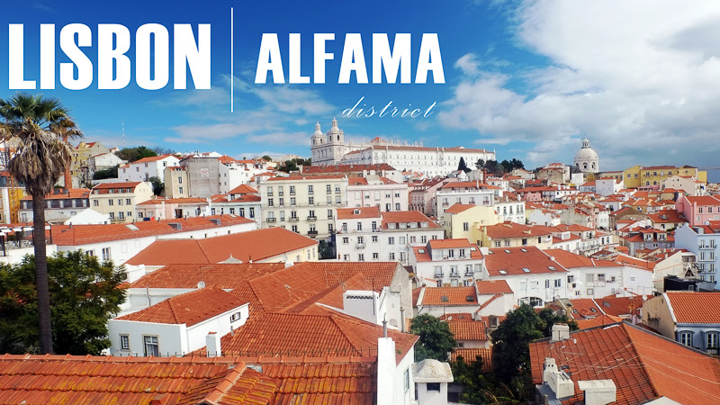
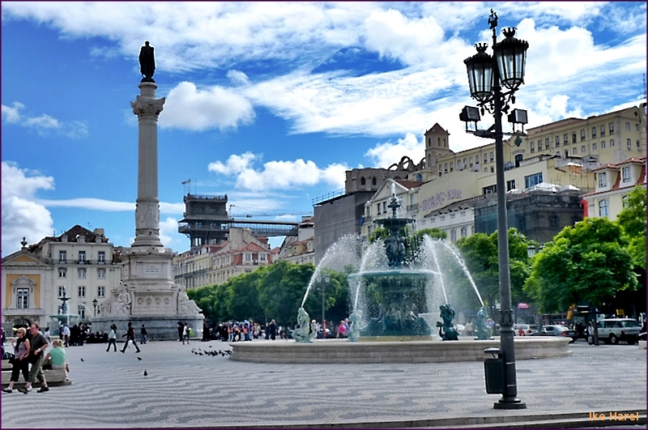
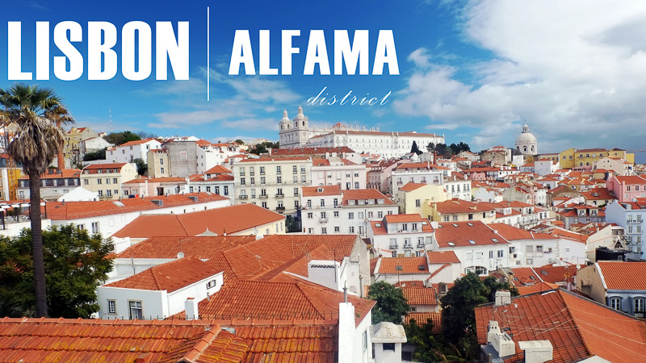
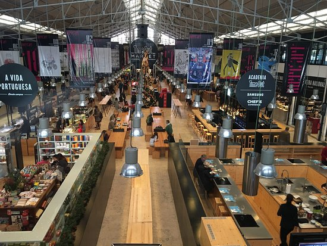
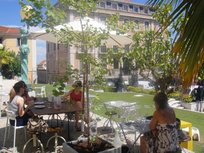
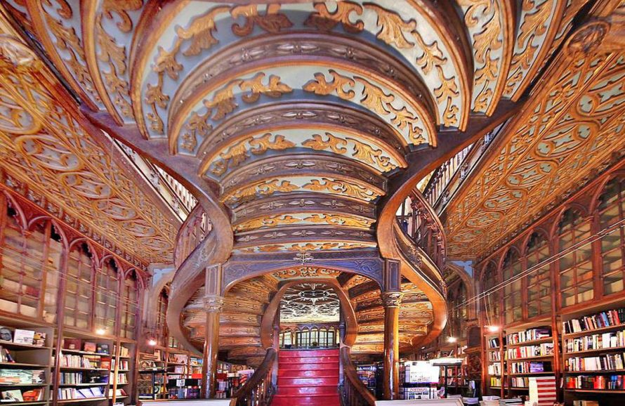
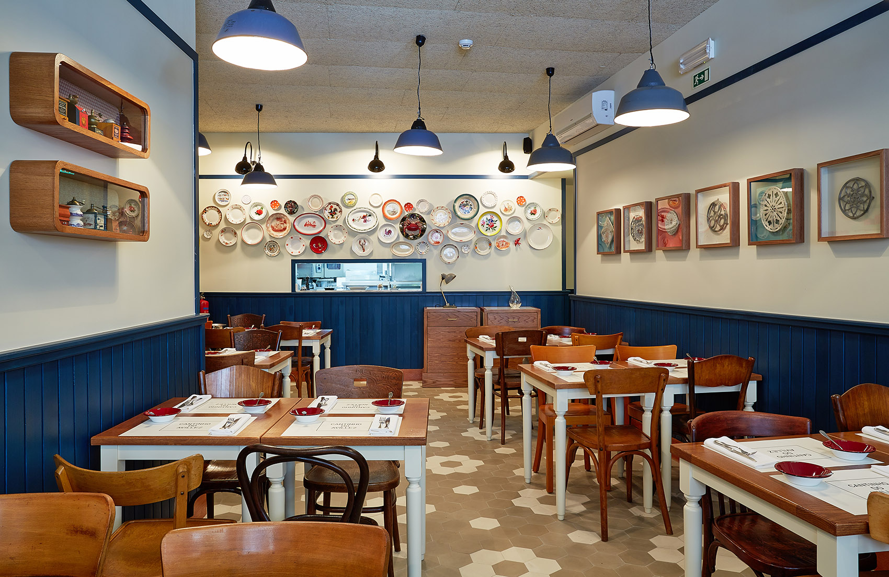
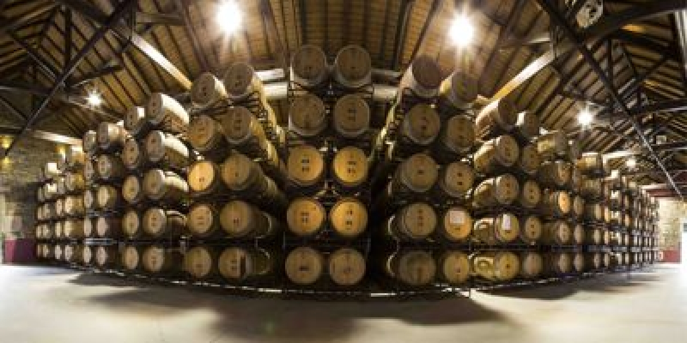
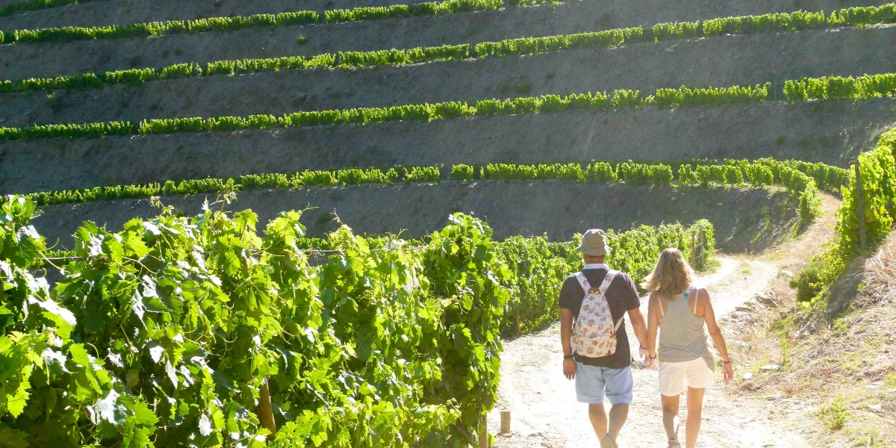

My Portugal Itinerary
Time Difference: 5 hours
Flights
Tuesday, June 26th
Flight TP202, booking code: JHIZL6
Newark Terminal B: 5:45pm --> Lisbon 5:35am
Flight duration: 6h50m
Gillian arrives from London at 8:30am, so I'll probably wait around the airport for her since it will take me longer to get through customs, I expect. I will obviously be very tired this day so nothing formal planned.
Tuesday, July 3rd
Flight TP202, booking code: JHXXYR
Porto SA Carneiro: 3:55pm --> Newark 6:55pm
Flight duration: 7h50m
Gillian's flight to London is at 6pm that same night, so we may go to the airport separately
Accommodations
Weds, June 27th - Sunday, July 1
LX Boutique Hotel
Confirmation number: 2430530799
Rua do Alecrim nº 12
1200 – 017 Lisboa, Portugal
+351 21 347 43 94
book@lxboutiquehotel.com
www.lxboutiquehotel.com
Sunday, July 1 - Tuesday, July 3
AirBnb Flores Street - Porto Center | 50442/AL
Link here
Activities
Weds, June 27th - Saturday, June 30th
Plans involve walking around Lisbon. We'll definitely do a day trip to Sintra (right now, thinking maybe Friday) but we haven't booked transportation yet so we have some flexibility.
Sights we intend to visit include: Castelo de Sao Jorge, Se Cathedral, Jardim de Sao Pedro, Rossio Square, Alfama District, and Belem/Belem tower

  
  
We have a lot of recommendations for food/drink, but no reservations. We plan to visit the Time Out Market, Pharmacy Museum/bar, and Manteigaria for pastel de nata
  
Sunday, July 1st
We have an 8am train to Porto already booked, which should take around 3 hours. We'll spend the rest of the day walking around Porto, making sure to visit Livraria Lello. 
We have an 8pm dinner reservation at Cantinho do Avillez
 
Monday, July 2nd
We haven't booked transport yet, but will take the train to Pinhao in the Douro Valley. We have two spots reserved on the 2:30 tour/tasting at Quinta de la Rosa
 
Tuesday, July 3rd
Explore Porto some more and then head to the airport